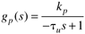
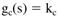
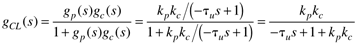
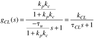
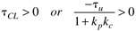
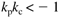

| [ Team LiB ] |
|
5.8 Open-Loop Unstable SystemsThe examples presented thus far in this chapter have assumed that the process is open-loop (that is, without control) stable. For these systems we can always "detune" a controller enough so that the closed-loop system is stable. Indeed, if we simply let kc = 0, then we have stability because the closed-loop transfer function is equal to the open-loop transfer function. Open-loop unstable systems are much tougher to control, because the control must be tuned "tightly" enough to stabilize the system, yet not so tightly that the closed-loop system will be unstable. Some exothermic chemical reactors and biochemical reactors are operated at open-loop unstable steady states (that is, at least one eigenvalue of the A matrix is positive; this is equivalent to at least one pole of the process transfer function being positive). Example 5.5: First-Order Open-Loop Unstable Process with P-Only ControlConsider a first-order open-loop unstable process (see Module 7 on bioreactor control for an example),  where tu > 0. We use this notation to make it clear that the process is open-loop unstable, since the pole is positive. Here again we use a proportional controller  The closed-loop transfer function is  which can be written  Notice that for stability we require that  which means that (since – tu < 0), 1 + kpkc < 0, or  Recall that an open-loop stable first-order process under P-only control (Example 5.1) required that kpkc > –1 for closed-loop stability (and kpkc > 0 for reasonable performance). For open-loop stable processes and controllers with integral action, kpkc > 0 is required for stability; this means that the process gain and controller gain must be the same sign. It is interesting that this open-loop unstable process needs the controller and process gain to be different signs. Not all open-loop unstable processes can be stabilized by P-only control. For example, one of the processes in Exercise 10 cannot be stabilized by P-only control. |
| [ Team LiB ] |
|